Skidegate
Is on the Southern End
- artifacts
- gift shop
- beautiful ocean views along with the small islands in front you could paddle out to and explore
Scenic view of the front of the Heritage centre
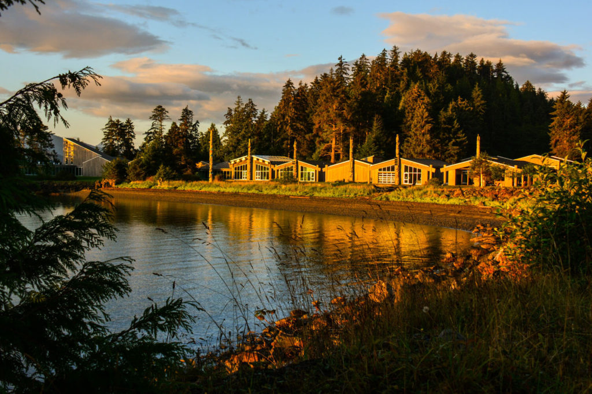 photos source- bakery
- hot drinks
- rooms for guests too if you wanted to stay in Skidegate
Outside photo of the coffee shop
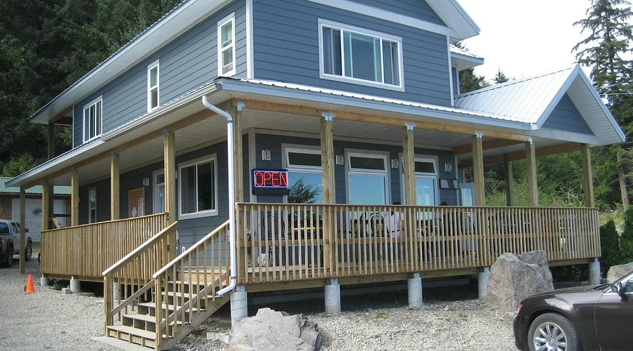 photos source- Unsual rock and beach to check out
photo of Balance Rock
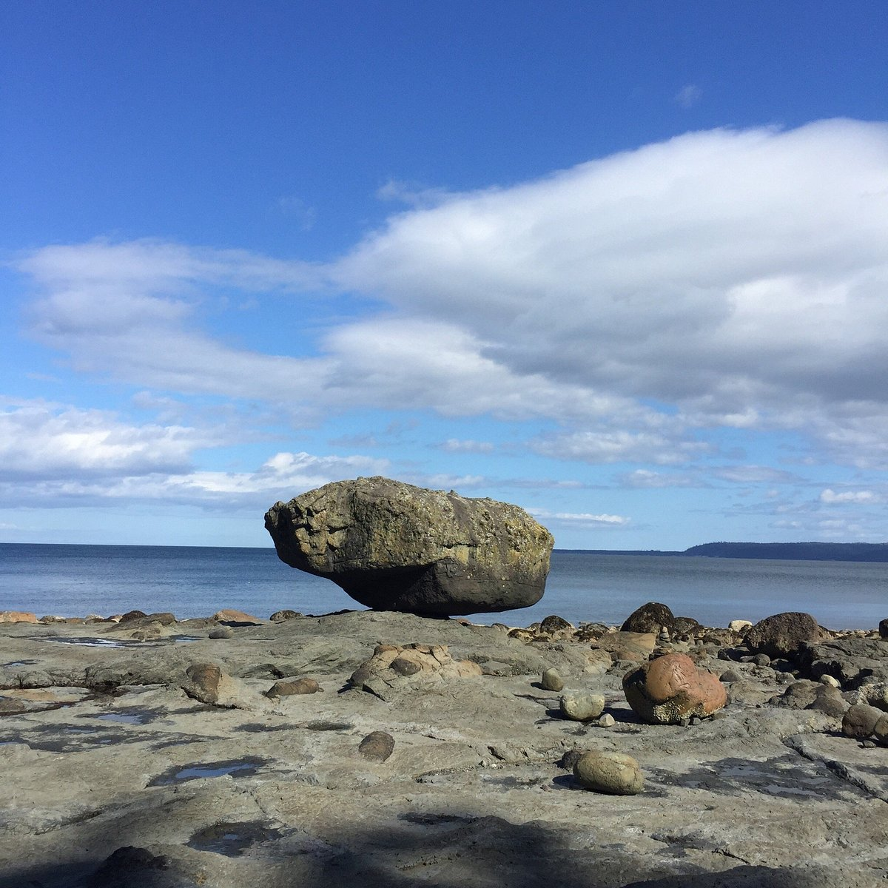 photos sourceSandspit
30 minute ferry ride from Skidegate
- Only golf course on the southern end, 18 holes
- rooms for an extended trip
- clubhouse for food drinks and darts or pool
Above shot of the golf course
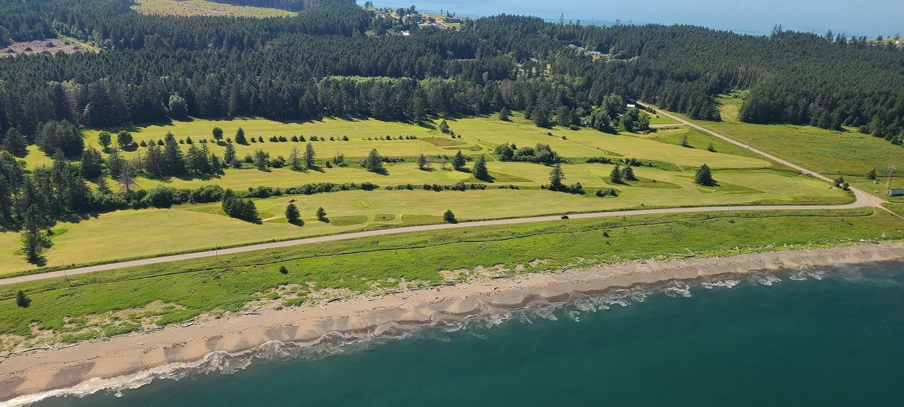 photos sourceGwaii Haanas National Park
National Park on the southern end of the island ranging near 1/3 to a 1/4 of the island. Many old haida villages you can visit and get tours of, boat or air access only
- old haida village closest and easiest to get to
- tours available
photo of Skedans in the past
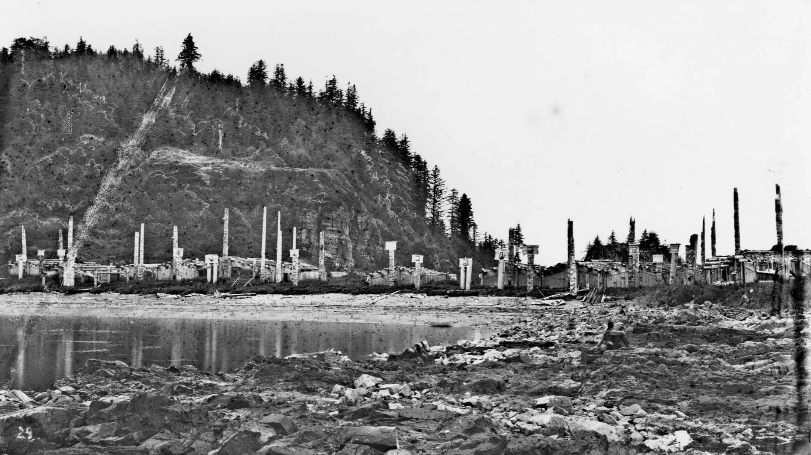 photos sourcephoto of more recent times and a section of Skedans
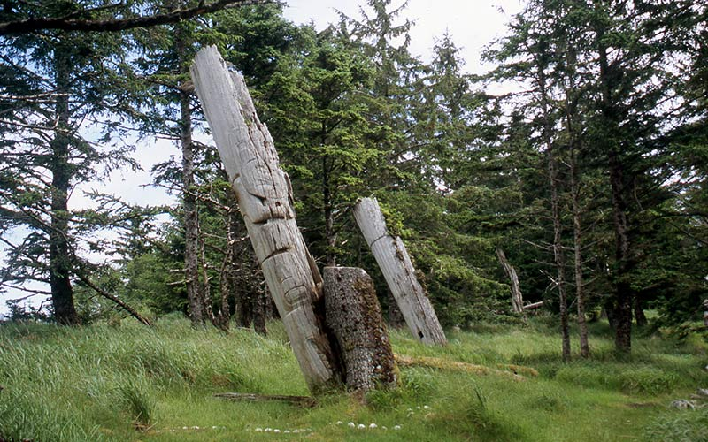 photos source- Natural hot springs
- tours available
photo of one of the hot springs in the area
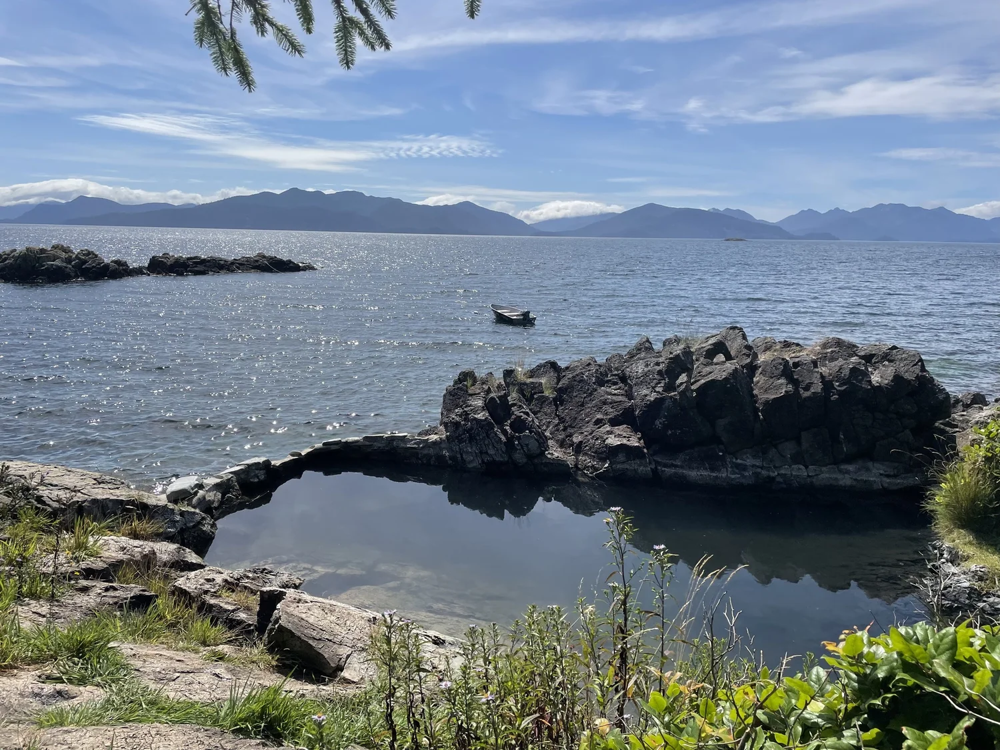 photos source- Most southern village in the park on the southern tip of Haida Gwaii
- tours available
recent photo of Ninstints on the beach overlooking main bay
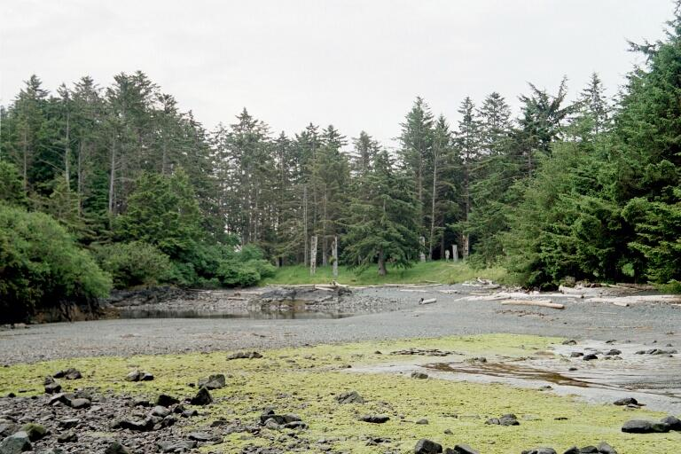 photos sourceilustration of what Ninstints looked like before
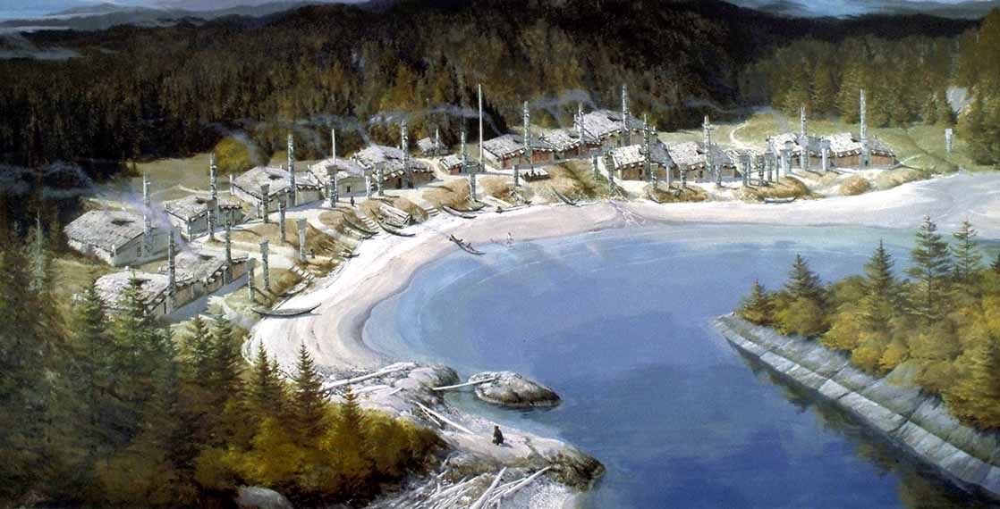 photos sourceTlell
Mid island between Skidegate and Port Clements
- Variety of crystals, minerals and jewlery
photo of some items from the shop
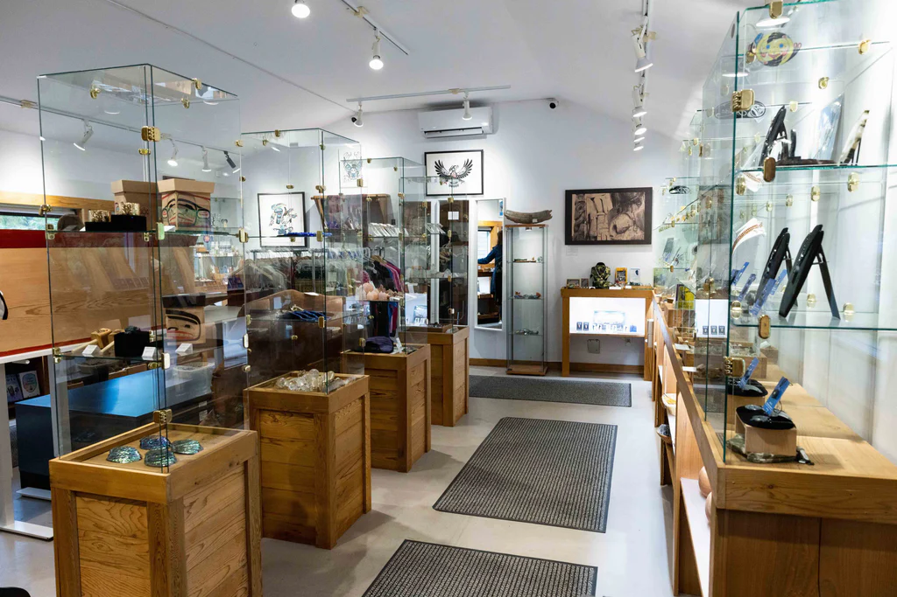 photos source- hot and cold drinks
- bakery
- beautiful beach to walk and enjoy your food and drink across the road
Baked good and a bit of items for sale
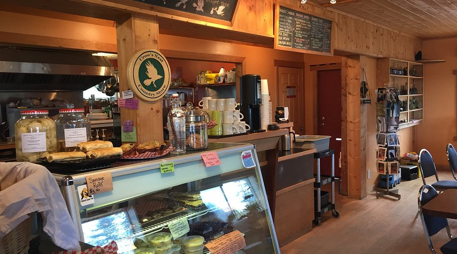 photos source